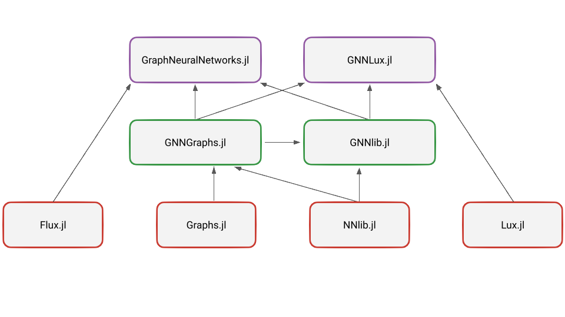

GraphNeuralNetworks Monorepo
This is the monorepository for the GraphNeuralNetworks project, bringing together all code into a unified structure to facilitate code sharing and reusability across different project components. It contains the following packages:
GraphNeuralNetwork.jl: Package that contains stateful graph convolutional layers based on the machine learning framework Flux.jl. This is fronted package for Flux users. It depends on GNNlib.jl, GNNGraphs.jl, and Flux.jl packages.GNNLux.jl: Package that contains stateless graph convolutional layers based on the machine learning framework Lux.jl. This is fronted package for Lux users. It depends on GNNlib.jl, GNNGraphs.jl, and Lux.jl packages.GNNlib.jl: Package that contains the core graph neural network layers and utilities. It depends on GNNGraphs.jl and GNNlib.jl packages and serves for code base for GraphNeuralNetwork.jl and GNNLux.jl packages.GNNGraphs.jl: Package that contains the graph data structures and helper functions for working with graph data. It depends on Graphs.jl package.
Here is a schema of the dependencies between the packages:

Among its general features:
- Implements common graph convolutional layers both in stateful and stateless form.
- Supports computations on batched graphs.
- Easy to define custom layers.
- CUDA support.
- Integration with Graphs.jl.
- Examples of node, edge, and graph level machine learning tasks.
- Heterogeneous and temporal graphs.
Installation
GraphNeuralNetworks.jl, GNNlib.jl and GNNGraphs.jl are a registered Julia packages. You can easily install a package, for example GraphNeuralNetworks.jl, through the package manager :
pkg> add GraphNeuralNetworksUsage
Usage examples can be found in the examples and in the notebooks folder. Also, make sure to read the documentation for a comprehensive introduction to the library and the tutorials.
Citing
If you use GraphNeuralNetworks.jl in a scientific publication, we would appreciate the following reference:
@misc{Lucibello2021GNN,
author = {Carlo Lucibello and other contributors},
title = {GraphNeuralNetworks.jl: a geometric deep learning library for the Julia programming language},
year = 2021,
url = {https://github.com/JuliaGraphs/GraphNeuralNetworks.jl}
}Acknowledgments
GraphNeuralNetworks.jl is largely inspired by PyTorch Geometric, Deep Graph Library, and GeometricFlux.jl.